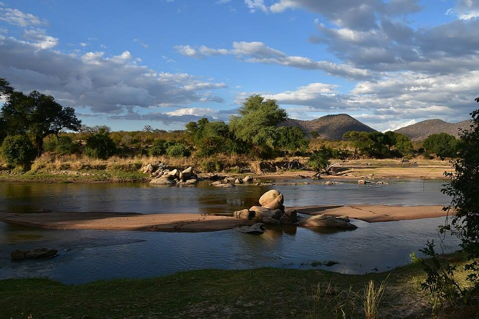
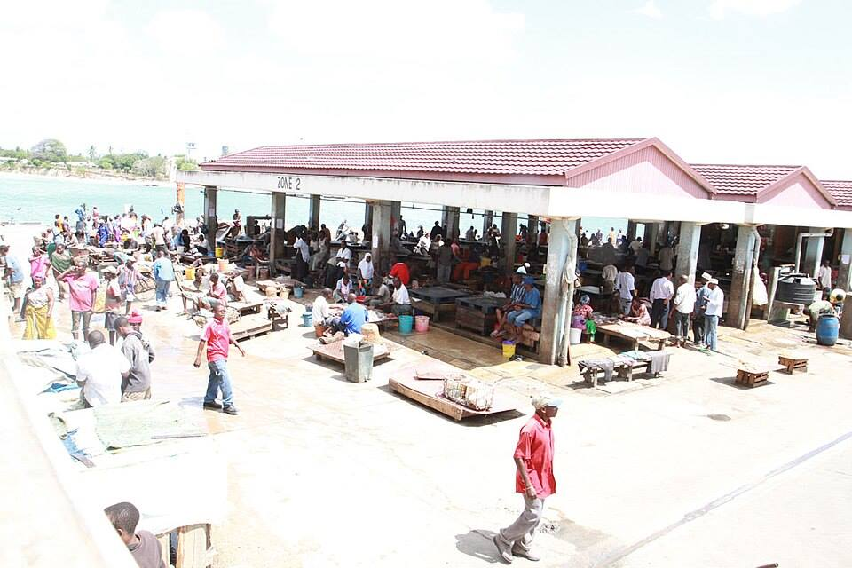
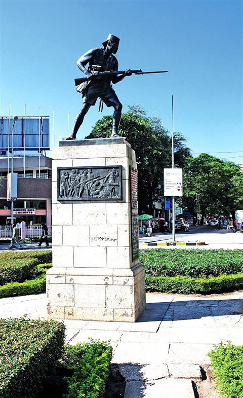
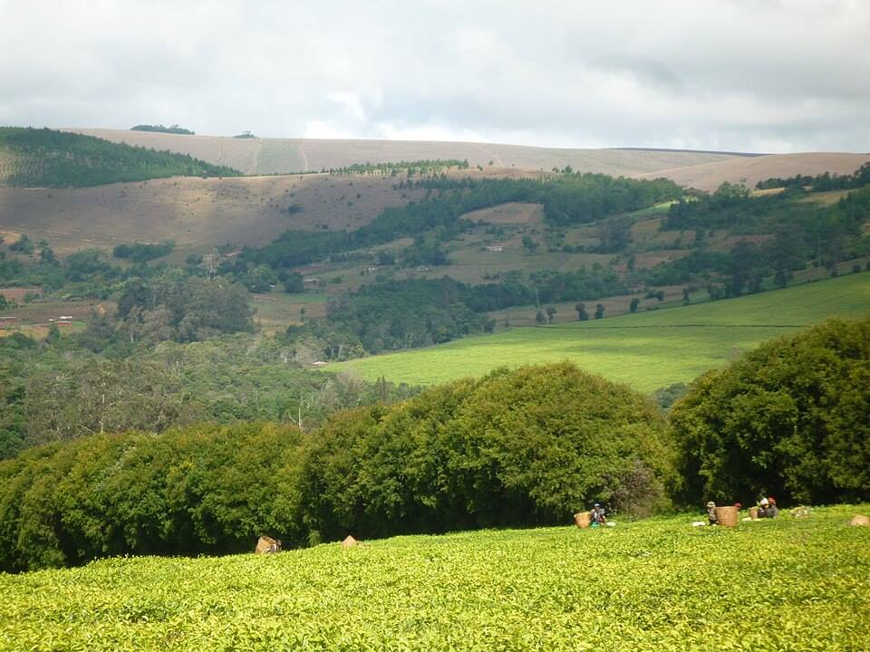
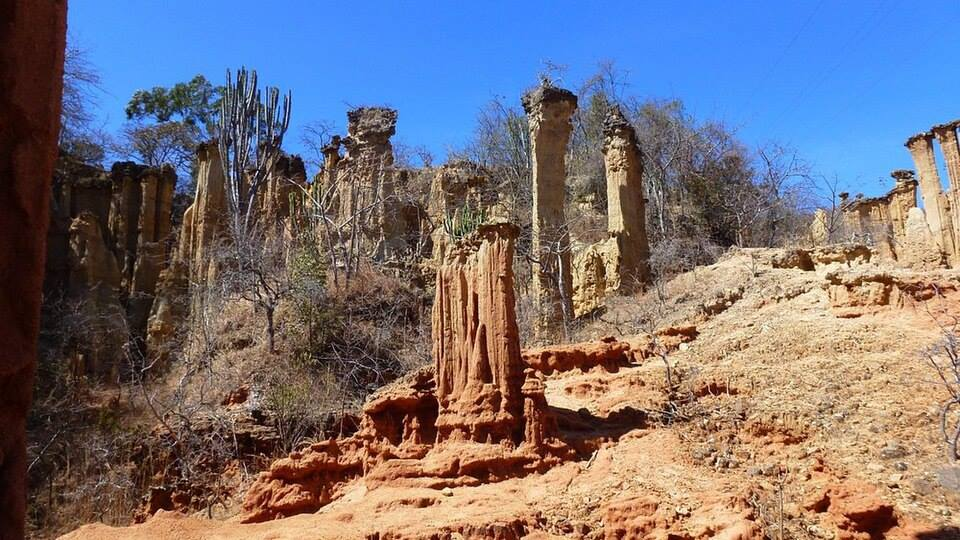
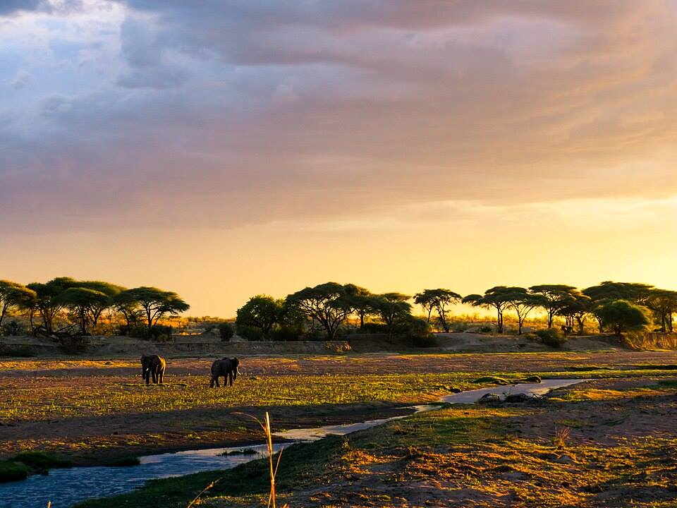
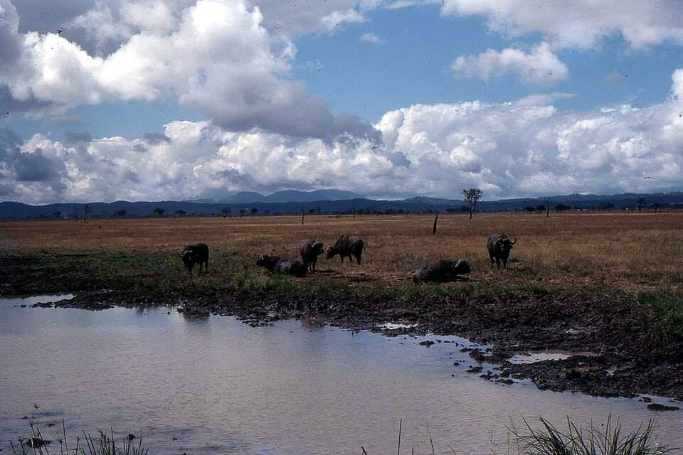

Parte 4 · La guida per tappe
Tappa per tappa
Dall'oceano agli altopiani, dal villaggio alla savana e ritorno. Sette capitoli, uno per ogni luogo del viaggio, ciascuno con il suo colore: storia, cosa vedere, come ci si arriva, i consigli e gli animali da cercare.
Foto: Il fiume Grande Ruaha, Parco Nazionale del Ruaha · Richard Mortel · CC BY 2.0
Il percorso
Sette tappe, circa 2.000 km tra volo e strada
Il viaggio disegna un grande anello nel sud della Tanzania. Un volo porta da Dar es Salaam a Mbeya. Da lì si sale in jeep sugli altopiani meridionali, fino al villaggio di Mavanga, dove resteremo una settimana. Poi si risale verso nord, a Iringa e nel Ruaha. Infine, in bus, si torna verso la costa attraverso il Parco di Mikumi.
Tocca un numero sulla mappa o nella legenda per andare al capitolo di quella tappa. Le distanze e i tempi di ogni capitolo sono stime: in Tanzania il tempo di viaggio dipende da strada, pioggia, traffico e controlli di polizia, più che dai chilometri.
La mappa ha bisogno della connessione la prima volta che si apre.

1Giorni 1 e 12–13 · 29 novembre, 10–11 dicembre
Dar es Salaam
La porta sull'oceano: caotica, calda, umida e piena di energia. Qui inizia e finisce il viaggio.
Foto: Mercato del pesce di Kivukoni, Dar es Salaam (2012) · Development Planning Unit, University College London · CC BY 2.0
- Abitanti
- oltre 5 milioni (regione, censimento 2022)
- Clima a dicembre
- caldo umido, 25–32 °C, acquazzoni brevi
- Quanto restiamo
- sera del giorno 1, poi giorni 12–13
- Il nome
- «dimora della pace»
Si arriva di notte o nel caldo appiccicoso del pomeriggio, e la prima impressione è il traffico. Una corrente continua di minibus daladala dipinti, bajaji, moto e camion che vanno al porto. Poi, sul lungomare, il vento dell'oceano Indiano, le palme e i dhow che rientrano. Dar es Salaam non è una città da cartolina, e non ha monumenti da fila. È una città da vivere: un mercato all'alba, un piatto di mishkaki la sera a una bancarella, la folla di Kariakoo, un tramonto a Coco Beach.
Ci passeremo poche ore all'andata e quasi due giorni al ritorno. È il momento giusto per guardarla con occhi diversi: dopo tre settimane di altopiani e savana, il ritorno in città è un piccolo choc.
Un po' di storia
La costa swahili commercia con l'Arabia, la Persia e l'India da più di mille anni, ma Dar es Salaam è giovane. La fondò negli anni '60 dell'Ottocento il sultano Majid di Zanzibar, che le diede un nome arabo, Dār as-Salām, «dimora della pace». Alla sua morte la città fu quasi abbandonata. Rinacque con i tedeschi, che nel 1891 ne fecero la capitale dell'Africa Orientale Tedesca. Dopo la Prima guerra mondiale passò agli inglesi e nel 1961 divenne la capitale del Tanganica indipendente.
Nel 1973 il governo decise di spostare la capitale a Dodoma, nel centro del paese. Il trasferimento è durato decenni, e solo negli ultimi anni ministeri e presidenza si sono trasferiti davvero. Dar resta però il cuore economico del paese, il suo porto principale e la città più grande dell'Africa orientale di lingua swahili.
Cosa vedere e fare
- Il mercato del pesce di Kivukoni, all'alba: le aste del pesce appena sbarcato, i venditori che puliscono e friggono sul posto. Si va presto, con scarpe chiuse e poco in tasca.
- Il centro storico, a piedi: il monumento all'Askari, la cattedrale di San Giuseppe e la chiesa luterana di Azania Front, entrambe dell'epoca tedesca, con il lungomare a pochi passi.
- Kariakoo, il grande mercato: tessuti kanga, spezie, pentole, telefoni. Il nome viene da Carrier Corps, il corpo dei portatori africani della Prima guerra mondiale, che aveva qui le sue caserme.
- Il Museo Nazionale, accanto all'orto botanico, con una sezione sulle origini dell'uomo in Tanzania e una sulla storia coloniale. Al Village Museum (Makumbusho ya Kijiji), sulla Bagamoyo Road, si vedono invece le case tradizionali di diversi popoli del paese.
- Mwenge, il mercato degli intagliatori: sculture makonde, quadri tingatinga, scatole e utensili in legno. È il posto migliore per gli ultimi acquisti, il giorno 13.
- Coco Beach e la penisola di Msasani al tramonto, con le bancarelle di mais arrosto e cocco fresco. Se c'è mezza giornata libera, una barca porta all'isoletta di Bongoyo, nella riserva marina davanti alla città.
- Il traghetto per Kigamboni, dal molo di Kivukoni: dieci minuti di traversata tra pendolari, bancarelle e biciclette, con la vista più bella sul porto.

Dormire e mangiare
L'albergo lo sceglie l'organizzazione e lo trovate nei documenti di viaggio. Per orientarsi: il centro (zona di Posta e Kisutu) è pratico e vicino al porto, ma la sera si svuota. Le zone di Masaki e Oyster Bay, sulla penisola, sono più tranquille e più care, con molti ristoranti internazionali.
Per mangiare come i wabongo, gli abitanti di Dar: la sera cercate le griglie di mishkaki e nyama choma sui marciapiedi, le bancarelle di chipsi mayai, la frittata con le patatine, e i mandazi con il chai al mattino. Sulla costa la cucina swahili usa cocco, tamarindo e spezie, e la comunità di origine indiana ha lasciato biryani, samosa e chapati. Le schede dei piatti sono nel capitolo Mangiare e bere.
Come arrivare e muoversi
L'aeroporto internazionale Julius Nyerere è a circa 12 km dal centro: da mezz'ora a un'ora e mezza di strada, a seconda del traffico (foleni). Dallo stesso aeroporto parte il volo per Mbeya del giorno 2. In città si usano i bajaji, i taxi e le app di trasporto come Bolt e Uber, che mostrano il prezzo prima di partire. Il mwendokasi, il bus rapido su corsia riservata, collega il centro a Kariakoo e Kimara. Il giorno 12 si arriva da Iringa in bus, di sera.
Informazioni verificate il 12/11/2026. Orari e prezzi dei musei e dei traghetti cambiano spesso: chiedete in albergo. Vedi sulla mappa ↑

2Giorni 2–3 · 30 novembre – 1 dicembre
Mbeya e Mpanga Kipengere
Caffè, nebbia e cascate: il primo assaggio degli altopiani meridionali, tra i 1.700 e i 2.800 metri.
Foto: Cascate Kimani, riserva di Mpanga Kipengere · Thomas veroza · CC BY-SA 4.0
- Riserva
- circa 1.574 km², istituita nel 2002
- Gestione
- TAWA, l'autorità per la fauna
- Clima a dicembre
- fresco, 10–22 °C, piogge frequenti
- Quanto restiamo
- un giorno a Mbeya, una mattina nella riserva
Si scende dall'aereo a Songwe e l'aria è un'altra. Dopo il caldo umido di Dar, qui si respira: siamo a oltre 1.500 metri, tra montagne verdi coltivate fino in cima. Mbeya è una città di commercio e di passaggio, sulla strada e sulla ferrovia per lo Zambia, ed è uno dei centri del caffè arabica tanzaniano. Il giorno dopo si parte presto in jeep verso est, e la strada sale tra campi di mais, patate e pini, verso la riserva di Mpanga Kipengere.
La riserva protegge la parte settentrionale della catena dei Kipengere, tra le regioni di Njombe e Mbeya: praterie d'alta quota, valli di foresta montana e moltissima acqua. Non è un posto da Big Five. È un posto da nebbia che sale dalle valli, da cascate e piscine naturali, da uccelli e fiori che non vivono da nessun'altra parte.
Un po' di storia
Mbeya nacque intorno al 1927, quando la scoperta dell'oro nei vicini campi del Lupa attirò cercatori da tutta l'Africa orientale. L'oro finì presto, ma la città restò, grazie al caffè, al tè e alla posizione sulla grande strada per il sud.
Le foreste dei Kipengere sono protette dal 1958, quando nacque la riserva forestale della catena. Nel 2002 la riserva forestale è stata inglobata nella nuova riserva faunistica di Mpanga Kipengere, oggi gestita dalla TAWA. Il motivo principale è l'acqua: da queste montagne nascono i fiumi che riempiono la pianura di Usangu e il Grande Ruaha, da cui dipendono le risaie, le centrali idroelettriche più a valle e il Parco del Ruaha.
Cosa vedere e fare
- Una piantagione di caffè intorno a Mbeya (giorno 2): la raccolta, la tostatura, la degustazione. Dicembre è nel pieno della stagione delle piogge, quindi le piante sono in fiore o con le bacche ancora verdi.
- Il mercato della frutta di Mbeya: avocado, banane di tante varietà, frutto della passione, ananas. Gli altopiani sono l'orto della Tanzania.
- Le cascate Kimani e le piscine naturali sul fiume Kimani, il luogo più visitato della riserva.
- Il birdwatching lungo i margini della foresta e nelle praterie: nectarinie, vedove, beccamoschini degli altopiani e, se si è fortunati, l'aquila coronata sopra le valli.
- I fiori delle praterie d'alta quota, che a dicembre iniziano a fiorire: orchidee di terra, protee, lobelie. Lo stesso spettacolo, ancora più ricco, è sul vicino altopiano di Kitulo (vedi Altopiani e Kitulo).
Dormire e mangiare
A Mbeya si dorme in città, nell'albergo scelto dall'organizzazione. Nella riserva non si dorme: si fa la visita e nel pomeriggio si prosegue verso il villaggio. Portate acqua e qualcosa da mangiare per la giornata in jeep. Dentro la riserva non ci sono negozi, e i villaggi lungo la strada hanno solo piccoli chioschi (duka) con bibite, biscotti e frutta.
Come arrivare
Il volo Dar es Salaam → Mbeya atterra all'aeroporto di Songwe, a circa 20 km dalla città. Il giorno 3 si va in jeep verso est sulla statale per Njombe, poi su strade secondarie, in parte sterrate, fino alla riserva. Dalla riserva al villaggio di Mavanga la strada è lunga: è la giornata di trasferimento più impegnativa della prima parte del viaggio.
Gli animali e le piante di questa tappa
Tocca una scheda per aprirla nell'atlante della fauna.
Fonti: TAWA, Wikipedia, The Citizen. Verificato il 12/11/2026. Vedi sulla mappa ↑

3Giorni 3–9 · 1–7 dicembre
Mavanga
Una settimana in un villaggio degli altopiani di Ludewa: il cuore del viaggio.
Foto: Piantagioni di tè nel distretto di Ludewa, regione di Njombe (2014) · Gumtau · CC BY-SA 4.0. Non è una foto di Mavanga.
- Dove
- distretto di Ludewa, regione di Njombe
- Abitanti
- 9.738 nel circondario (censimento 2022)
- Clima a dicembre
- piogge frequenti, notti fresche
- Quanto restiamo
- 6 notti
Gli altopiani di Ludewa sono tra le zone meno visitate della Tanzania. Colline ondulate, campi di mais e patate, boschi di pini ed eucalipti, piantagioni di tè. Più a ovest, la scarpata dei Monti Livingstone precipita di oltre mille metri verso il lago Nyasa. Mavanga è uno dei villaggi di questi altopiani, e qui il turismo non esiste: per una settimana non saremo visitatori, ma ospiti.
È la parte del viaggio più difficile da raccontare prima. Le giornate seguiranno i ritmi del villaggio: la scuola al mattino, il lavoro nei campi, le partite di calcio nel pomeriggio, il buio presto la sera. Si impara a salutare tutti, a mangiare l'ugali con la mano destra, ad aspettare senza fretta. Molti viaggiatori, a distanza di anni, ricordano soprattutto questi giorni.
Il villaggio e la zona
Il distretto di Ludewa fa parte della regione di Njombe, istituita nel 2012 separandola da quella di Iringa. È una regione agricola e d'alta quota, conosciuta in Tanzania per il tè, le patate, gli avocado e il legname, e per le notti tra le più fredde del paese. Nel distretto, a Liganga e Mchuchuma, ci sono grandi giacimenti di ferro e carbone, di cui si parla da decenni come di una futura miniera.
Non abbiamo dati affidabili sull'altitudine esatta del villaggio, sulla sua storia e sui popoli che lo abitano: chiedetelo in loco, è un ottimo modo per iniziare una conversazione. Sugli altopiani di Njombe e Ludewa vivono soprattutto popolazioni bantu come i bena, i pangwa e i kinga, ognuna con la propria lingua. Tra loro, e con noi, si parla swahili.
Il progetto
Questa parte la compila la coordinatrice del viaggio, nel file data/mavanga.js. Le voci tratteggiate sono ancora da completare.
Caricamento…
Giorno 9: il tè e la partenza
La mattina del 7 dicembre si salutano il villaggio e chi ci ha ospitato. Lungo la strada verso Iringa è prevista la visita a una piantagione di tè degli altopiani: la raccolta delle foglie a mano, la lavorazione, e una tazza di tè dove cresce. Poi la strada scende per ore verso nord, passando per Njombe e Mafinga, fino a Iringa.
Come arrivare
Dalla riserva di Mpanga Kipengere si va a sud-est in jeep, passando per Njombe, l'ultima città grande prima del villaggio: è lì che conviene prelevare e fare gli ultimi acquisti. Poi si prosegue su strade secondarie, in gran parte sterrate. Con la pioggia i tempi si allungano molto.
Fonti: Ufficio nazionale di statistica della Tanzania (censimento 2022), OpenStreetMap. Verificato il 12/11/2026. Le informazioni sul progetto sono a cura della coordinatrice. Vedi sulla mappa ↑

4Giorni 9 e 11 · 7 e 9 dicembre
Iringa
La città degli hehe, sul bordo di una scarpata: la storia di Mkwawa, un sito dell'Età della Pietra e la porta del Ruaha.
Foto: Il quartiere di Kihesa, Iringa · Ernst G. Ulz · CC BY-SA 4.0
- Altitudine
- circa 1.600 m
- Abitanti
- circa 200.000 (comune)
- Clima a dicembre
- mite, 15–28 °C, temporali
- Quanto restiamo
- 2 notti, il 7 e il 9 dicembre
Iringa sta su un altopiano che finisce di colpo in una scarpata sopra la valle del Little Ruaha. Dal bordo si vede la pianura molto più in basso. È una cittadina tranquilla e ordinata, con un grande mercato coperto, edifici dell'epoca tedesca, chiese e moschee, e molti studenti universitari. Per noi è un punto di appoggio: ci dormiamo all'andata e al ritorno dal Ruaha, e la sera del 9 dicembre ci sarà il clima di festa dell'Uhuru Day.
Un po' di storia: Mkwawa e gli hehe
Nella seconda metà dell'Ottocento gli hehe, guidati dal capo Mkwawa, erano la potenza militare degli altopiani meridionali. Quando arrivarono i tedeschi, Mkwawa scelse di combattere. Nell'agosto del 1891, a Lugalo, i suoi guerrieri tesero un'imboscata a una colonna tedesca e la distrussero, uccidendone il comandante. Fu una delle sconfitte più gravi subite da un esercito coloniale in Africa orientale.
Nel 1894 i tedeschi presero e distrussero la sua fortezza di Kalenga, ma Mkwawa continuò la guerriglia per quattro anni. Nel 1898, circondato, si tolse la vita per non essere catturato. I tedeschi gli tagliarono la testa e mandarono il cranio in Germania. Il trattato di Versailles del 1919 ne chiese la restituzione, che però avvenne solo nel 1954. Oggi il cranio è conservato nel piccolo museo di Kalenga, a circa 15 km dalla città, accanto alla tomba di Mkwawa. Per gli hehe, e per molti tanzaniani, Mkwawa è un eroe nazionale.
Secondo la spiegazione più diffusa, il nome Iringa viene dalla parola hehe lilinga, «fortezza». La città nacque come presidio militare tedesco dopo la caduta di Kalenga.
Cosa vedere e fare
- Il mercato centrale: frutta e verdura degli altopiani, cestini e tessuti, il reparto delle spezie. Al mattino è al massimo dell'animazione.
- Gangilonga, la grande roccia sopra la città. Il nome significa «la pietra che parla» e la tradizione dice che Mkwawa vi saliva per riflettere. Dall'alto la vista sulla città e sulla valle è la migliore. Andateci con una guida locale, non da soli.
- Kalenga e il museo di Mkwawa, per capire la storia della città.
- Il sito dell'Età della Pietra di Isimila, a circa 20 km verso sud: uno dei siti più ricchi dell'Africa orientale di strumenti acheuleani, le asce a mano scheggiate da esseri umani di un'altra specie. Intorno, una piccola valle erosa di pinnacoli di arenaria.
- La sera del 9 dicembre, l'Uhuru Day in città: bandiere, musica, famiglie per strada (vedi Feste).

Dormire e mangiare
L'albergo lo sceglie l'organizzazione. In centro ci sono semplici ristoranti locali, caffè e locali di griglia. Iringa e Njombe sono la patria dell'ulanzi, il vino di bambù, la cui stagione coincide con le piogge: se ve lo offrono, assaggiatelo, ma con prudenza, perché fermenta in fretta e la forza varia molto da un giorno all'altro.
Come arrivare
Da Mavanga si risale a nord sulla statale che passa per Njombe e Mafinga: una lunga giornata di strada, con la sosta alla piantagione di tè. Il giorno 10 si parte presto verso il Ruaha, a ovest. Il giorno 11 si torna a Iringa, e il 12 si parte in bus per Dar es Salaam sulla statale A7.
Verificato il 12/11/2026. Orari e biglietti di Kalenga e Isimila: chiedete in albergo o alle guide. Vedi sulla mappa ↑

5Giorni 10–11 · 8–9 dicembre
Parco Nazionale del Ruaha
Il grande parco selvaggio del sud: baobab, leoni, elefanti e pochissime jeep.
Foto: Elefanti al tramonto, Ruaha · Brian Harries · CC BY 2.0
- Superficie
- circa 20.226 km², il secondo parco della Tanzania
- Istituito
- nel 1964, ampliato nel 2008
- Clima a dicembre
- caldo, 20–33 °C, primi temporali
- Quanto restiamo
- un pomeriggio, una notte nel parco, un'alba
Il Ruaha è più grande della Puglia (circa 20.200 km² contro 19.500), ma riceve solo una piccola parte dei visitatori del Serengeti. Qui le jeep si incontrano di rado, e un leone sdraiato sulla pista può essere tutto vostro. Il paesaggio cambia di continuo: le colline rocciose, i baobab giganti, la savana di acacie e, verso l'esterno, il bosco di miombo. In mezzo scorre il Grande Ruaha, il fiume che dà il nome al parco e che a dicembre, dopo mesi di secca, aspetta le prime piogge.
Il Ruaha sta a cavallo tra due mondi: è il punto in cui gli ambienti dell'Africa orientale incontrano quelli dell'Africa australe. Per questo si vedono insieme specie che altrove non si incontrano mai: il kudu maggiore e il kudu minore, l'antilope nera e l'antilope roana, la gazzella di Grant. È anche uno dei luoghi migliori al mondo per i grandi predatori. Secondo il Ruaha Carnivore Project, nel paesaggio Ruaha-Rungwa vive circa un decimo dei leoni rimasti in natura, insieme a leopardi, iene, ghepardi e licaoni.
Un po' di storia
Il nome viene dalla parola hehe che indica il fiume. Nel 1910 i tedeschi istituirono qui la riserva di caccia di Saba, che gli inglesi trasformarono nella riserva di Rungwa. Nel 1964 la parte meridionale divenne parco nazionale, e nel 2008 il parco è stato ampliato fino alle zone umide di Usangu, raddoppiando la sua superficie. Fino al 2019, quando è nato il Parco Nazionale Nyerere, era il parco più grande della Tanzania.
Il Ruaha ha attraversato anni difficili. Tra il 2009 e il 2014 il bracconaggio per l'avorio ha più che dimezzato gli elefanti dell'ecosistema Ruaha-Rungwa. Da allora i controlli sono aumentati e la situazione è migliorata. Il fiume è invece un problema ancora aperto: dagli anni '90, per l'acqua prelevata a monte per le risaie di Usangu, nella stagione secca il Grande Ruaha smette di scorrere per settimane.
Il nostro programma nel parco
- Giorno 10, 8 dicembre: partenza presto da Iringa, ingresso nel parco e primo game drive in jeep 4x4 con guida. Pranzo e cena inclusi, e la notte dentro il parco, la «notte wow» del programma.
- Giorno 11, 9 dicembre, Uhuru Day: game drive all'alba, il momento migliore per i predatori. Poi l'uscita dal parco, la visita al villaggio masai e il rientro a Iringa.
Le zone migliori per gli avvistamenti sono quelle lungo il fiume e i suoi affluenti stagionali, dove si concentrano gli animali alla fine della secca. Le probabilità di vedere ogni specie sono nell'atlante della fauna.
Dormire e mangiare
Il campo o il lodge dentro il parco li sceglie l'organizzazione. Nei campi tendati di solito la corrente c'è solo poche ore al giorno, con generatore o pannelli solari, e il wifi può mancare del tutto. La cena è spesso intorno al fuoco, e di notte si sentono iene, leoni e ippopotami.
Come arrivare
Da Iringa al parco ci sono circa 110–130 km, verso ovest: tre o quattro ore di strada, con un lungo tratto sterrato. La sede del parco è a Msembe, vicino al fiume.
Gli animali da cercare
Tocca una scheda per aprirla nell'atlante della fauna.
Fonti: Wikipedia, Expert Africa, Ruaha Carnivore Project. Verificato il 12/11/2026. Le tariffe d'ingresso sono incluse nella quota. Vedi sulla mappa ↑

6Giorno 11 · 9 dicembre
Cultura masai
Un popolo di pastori, il bestiame al centro di tutto, e una cultura che cambia senza scomparire.
Foto: Villaggio masai ai piedi del monte Lolmalasin, altopiani di Ngorongoro (non è il villaggio che visiteremo) · Guillaume Baviere · CC BY 2.0
- Lingua
- maa (e swahili)
- Il saluto
- Supa! · risposta: Ipa!
- Dove
- vicino al Ruaha, villaggio scelto dall'organizzazione
- Quanto restiamo
- una visita di qualche ora
Il cuore del territorio masai è più a nord, tra il Kenya meridionale e le pianure del Serengeti e di Ngorongoro. Ma i masai sono pastori, e da molti decenni diverse famiglie si sono spostate verso sud in cerca di pascoli, fino alle regioni di Iringa, Mbeya e Morogoro. Le comunità che vivono ai margini del Ruaha sono nate da queste migrazioni. Visiteremo una di loro il giorno 11, dopo il game drive dell'alba.
Al centro di tutto c'è il bestiame. Le vacche sono ricchezza, cibo, dote, prestigio, e il loro latte, la carne e un tempo anche il sangue erano la base della dieta. Il villaggio tradizionale, l'enkang, è un cerchio di case basse circondato da un recinto di rami spinosi, che di notte protegge gli animali dai predatori. Le case le costruiscono le donne, con rami, fango e sterco.
Le età della vita
La società masai è organizzata in classi d'età. I ragazzi circoncisi nello stesso periodo formano un gruppo che resta unito per tutta la vita. Da giovani sono ilmurran, i guerrieri, responsabili della difesa del bestiame. Poi diventano anziani, e insieme prendono le decisioni della comunità. Le danze in cui i giovani saltano in alto, a turno, al ritmo del canto del gruppo, fanno parte delle cerimonie che segnano questi passaggi. Ai visitatori se ne mostra spesso una versione breve.
Anche gli ornamenti hanno un significato: le collane e i grandi collari di perline colorate, fatti dalle donne, indicano l'età, lo stato civile e il gruppo. Il rosso della shuka, la coperta a quadri o a tinta unita che i masai portano sulle spalle, è diventato il colore simbolo del popolo.
Una cultura che cambia
Oggi molti masai vanno a scuola, coltivano mais accanto al pascolo, usano il cellulare per sapere dove ha piovuto e per vendere il bestiame, e lavorano in città, spesso come guardiani o guide. Sono in maggioranza cristiani. La vita da pastori è sempre più difficile, tra la siccità, la crescita della popolazione e i conflitti per la terra con agricoltori e aree protette. Dal 2022 le ricollocazioni di comunità masai dall'area di Ngorongoro e la creazione di nuove riserve a Loliondo hanno suscitato proteste e critiche internazionali.
Il turismo culturale porta un reddito importante, ma pone anche domande. Una visita può essere un incontro vero o una messinscena. La differenza la fanno soprattutto il modo in cui ci si comporta e il fatto che i soldi arrivino davvero alla comunità.
Verificato il 12/11/2026. Il villaggio della visita e le sue regole li comunica la guida in loco.

7Giorno 12 · 10 dicembre
Parco Nazionale di Mikumi
Un safari dal finestrino: cinquanta chilometri di savana attraversati dalla statale per Dar es Salaam.
Foto: Parco Nazionale di Mikumi · mwanasimba · CC BY-SA 2.0
- Superficie
- circa 3.230 km²
- Istituito
- nel 1964
- Clima a dicembre
- caldo, 22–32 °C, temporali
- Quanto restiamo
- circa un'ora di bus dentro il parco
L'ultimo giorno di strada è il più lungo: circa 500 km in bus, da Iringa fino a Dar es Salaam. Ma a metà percorso c'è una sorpresa. La statale A7, la grande strada che collega il porto di Dar es Salaam allo Zambia, taglia per una cinquantina di chilometri il Parco Nazionale di Mikumi, e dal finestrino del bus si vedono elefanti, giraffe, zebre, impala, bufali e babbuini a bordo strada, tra camion e cisterne.
Il cuore del parco è la pianura alluvionale del fiume Mkata, una savana aperta chiusa tra i monti Uluguru e Rubeho. A sud, il Mikumi confina con il Parco Nazionale Nyerere, l'ex riserva del Selous: insieme formano uno degli ecosistemi protetti più grandi d'Africa.
La strada del giorno 12
- La gola del Little Ruaha: appena lasciata Iringa, la strada scende dalla scarpata lungo la valle del fiume, tra rocce e centinaia di baobab. È uno dei paesaggi più belli di tutto il viaggio: tenete pronta la macchina fotografica, dal lato destro del bus.
- Mikumi, la cittadina e poi il parco: la statale entra nella pianura e per circa un'ora si guarda fuori.
- Morogoro, ai piedi dei monti Uluguru, e poi la pianura verso la costa, sempre più calda e umida.
- L'arrivo a Dar es Salaam, di sera, nel traffico.
Cosa vedere dal bus
Gli animali più facili sono quelli che pascolano vicino alla strada: impala, zebre, giraffe, gnu e bufali, e i babbuini che camminano sull'asfalto. Gli elefanti attraversano spesso la statale, soprattutto al mattino e verso sera. Guardate anche i fili della luce e i rami secchi: la ghiandaia marina pettolilla e i rapaci si posano spesso proprio a bordo strada. Leoni e altri predatori dalla statale sono rari.
Il bus non si ferma dentro il parco. Le foto si fanno dal finestrino, con lo zoom e la raffica, e accettando che molte vengano mosse.
Gli animali da cercare dal bus
Tocca una scheda per aprirla nell'atlante della fauna.
Fonti: Wikipedia, Key Biodiversity Areas. Verificato il 12/11/2026. Vedi sulla mappa ↑